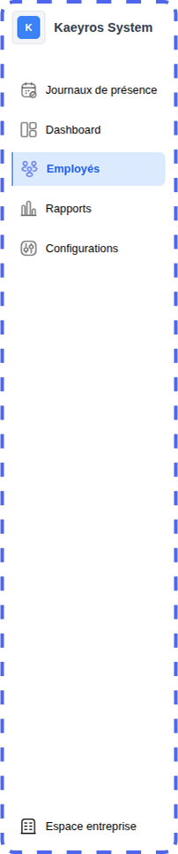
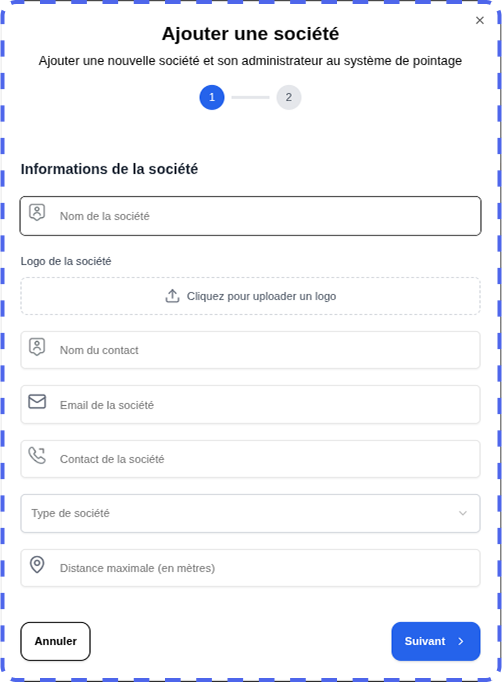
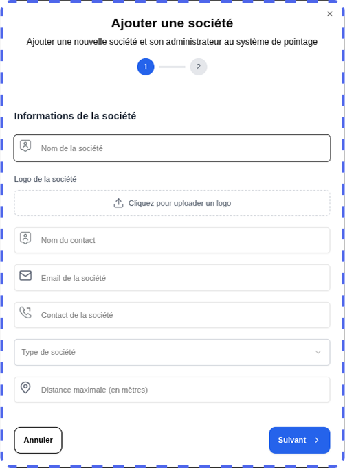

Aperçu
La plateforme de pointage développée par Kaeyros Analytics permet deux types d’utilisation :
Administration interne : suivi des présences et gestion des utilisateurs de votre entreprise ;
Distribution : gestion de la solution pour d’autres structures clientes (fonction réservée aux comptes Reseller).
Ce guide décrit étape par étape l’utilisation de la plateforme, depuis la connexion jusqu’au reporting.
Connexion à la plateforme
L’accès à la plateforme d’administration se fait via un navigateur web. Voici les étapes à suivre pour se connecter :
Ouvrez votre navigateur (Google Chrome, Firefox, Edge, etc.) ;
Saisissez l’URL suivante : « https://pointing-front.kaeyros.org » ;
Renseignez les identifiants fournis lors de la souscription au service (adresse e-mail et mot de passe) ;
Cliquez sur « Connexion » pour accéder à votre espace.

En cas d’oubli de mot de passe, veuillez nous contacter afin d’en obtenir un nouveau. Une fois connecté, vous aurez un accès direct aux journaux de présence, où vous pourrez consulter les données de présence des employés pour la journée de votre choix.

Journaux de présence
Une fois connecté aux journaux de présence, vous pouvez :
visualiser les présences pour une journée donnée,
saisir manuellement une présence,
télécharger le rapport de présence,
consulter le reporting global.
i. Parcourir les jours
Pour changer de jour, cliquez sur le calendrier où la date est affichée, comme illustré dans la capture ci-dessous.

ii. Enregistrer manuellement une présence
Cette fonction est réservée aux personnels autorisés (ex. : agent d’accueil) pour saisir la présence d’un employé de manière manuelle.
Cliquez sur le bouton Saisir la présence.
Dans la boîte de dialogue qui s’ouvre, sélectionnez :
L’employé concerné ;
Le site correspondant

Cliquez sur Valider pour enregistrer la présence, elle sera immédiatement affichée dans le tableau récapitulatif de la journée.
Important : chaque employé doit pointer deux fois par jour :
Entrée : heure d’arrivée ;
Sortie : heure de départ.
iii. Télécharger le rapport journalier des présences
Vous pouvez générer un rapport quotidien des présences pour suivre l’activité de vos employés.
Sélectionnez le jour pour lequel vous souhaitez obtenir le rapport.
Cliquez sur le bouton Exporter.

Le fichier Excel contenant les présences de tous les employés pour la journée choisie sera automatiquement téléchargé.

Structure du fichier :
Employé : nom de l’employé ;
Entrée / Sortie : heures de pointage ;
Site : lieu du pointage ;
En retard de : durée du retard éventuel ;
Type entrée / sortie : Maniere dont le pointage s’effectue ;
iv. Visualiser les statistiques journalières des présences

Vous pouvez consulter :
Le nombre d’employés arrivés à l’heure ;
Le nombre d’employés en retard ;
Les pourcentages de présence, de retard et de ponctualité, affichés dans la partie droite du tableau de bord.
v. Voir les détails sur les présences

Les données affichées reprennent les colonnes du rapport Excel : heures d’arrivée et de départ, site, retard, heures supplémentaires et solde.
Vous pouvez aussi utiliser les options suivantes pour faire une recherche à partir du nom de l’employé, filtrer par le site, et basculer entre les pages en utilisant le menu de pagination.
vi. Visualiser le reporting
Le reporting permet d’analyser les tendances de présence des employés sur une période étendue (mois, trimestre, année). Contrairement au tableau de bord journalier, cette vue fournit une synthèse globale pour aider à évaluer la ponctualité et l’assiduité au niveau de l’entreprise ou des départements.

Sélectionnez la période souhaitée (mois, trimestre, année) à l’aide des filtres disponibles.
Paramétrer sa plateforme
La configuration initiale est réservée aux utilisateurs disposant du rôle d’Administrateur. Elle permet de définir les éléments essentiels de l’entreprise :
Sites
Horaires de travail
Départements
Postes
Toutes ces options sont accessibles depuis l’onglet Paramètres de la plateforme.
i. Ajouter les Sites
Pour ajouter un nouveau site, commencez par accéder à l’onglet Paramètres. Vous serez automatiquement dirigé vers le sous-onglet Sites. Ensuite, cliquez sur le bouton Ajouter un site pour créer et configurer un nouveau site au sein de votre entreprise.
Une boîte de dialogue s’ouvre. Renseignez les informations suivantes :
Nom du site ;
Numéro de téléphone (utilisé pour l’intégration WhatsApp du pointage) ;
Adresse du site ;
Coordonnées géographiques (cliquez sur Obtenir la localisation, en veillant à activer la géolocalisation sur votre appareil).

Cliquez sur Suivant pour définir les horaires de travail :
Sélectionnez les jours ouvrables ;
Indiquez les heures d’ouverture et de fermeture (ex. : 08h30 – 17h30).

Cliquez sur Valider pour finaliser.
Une fois validé, un QR Code est automatiquement généré. Il sert de pointage pour les employés sur le site concerné.

Conseil : avant impression ou diffusion, testez le QR Code pour vérifier qu’il redirige bien vers le numéro WhatsApp configuré.
ii. Visualiser et modifier un site
Toujours dans le sous-onglet Sites, consultez la liste des sites déjà créés.

Pour modifier ou supprimer un site, cliquez sur Éditer le site :
Vous pouvez modifier le nom, le numéro de téléphone, les coordonnées géographiques et les horaires ;
Vous pouvez également supprimer un site si nécessaire.
Pour télécharger le QR Code d’un site existant, cliquez sur Télécharger en bas de Éditer un site.
iii. Configurer les horaires de travail
Accédez au sous-onglet Horaires dans l’onglet Paramètres.
Sélectionnez le site concerné dans la liste déroulante.

Modifiez les horaires comme souhaité (jours ouvrables, heures d’ouverture/fermeture).
Enregistrez vos modifications en cliquant sur Valider.
iv. Configurer les départements
Rendez-vous dans le sous-onglet Département.

Vous pouvez :
Visualiser la liste des départements existants ;
Modifier le nom d’un département en utilisant le bouton d’édition ;
Supprimer un département en utilisant le bouton d’édition.
v. Configurer les postes
Accédez au sous-onglet Poste.

Vous pouvez :
Visualiser tous les postes de l’entreprise ;
Modifier l’intitulé ou la description d’un poste ;
Supprimer un poste existant en utilisant le bouton d’édition.
Gestion des employés
Cela se fait sur l’onglet Employés.

Sur cet onglet, on peut visualiser les employés enregistrés dans l’entreprise, ajouter un employé, modifier les informations d’un employé ou supprimer un employé.
i. Ajouter un employé
En cliquant sur le bouton Ajouter un employé, une boîte de dialogue va s’ouvrir et vous allez renseigner le nom de l’employé, son numéro de téléphone, l’adresse mail, le poste et le département de l’employé.

Attention : pour le numéro de téléphone, il faut se rassurer de renseigner le numéro tel qu’il est renseigné sur WhatsApp (par exemple, les numéros sans 6 comme 23789898989 et les numéros avec 6 tels que 237689898989).
ii. Visualiser, modifier et supprimer un employé
Tout se passe exactement comme dans les autres cas. À partir du bouton d’édition, vous pouvez choisir soit l’option de modification, soit celle de suppression selon ce que vous voulez faire.

Gestion des comptes
Cela se fait dans l’onglet Espace entreprise. Seuls les utilisateurs qui ont le rôle d’Admin ou d’account manager peuvent voir cet onglet.
Sur cette section, il y a deux principales fonctionnalités : Ajouter une nouvelle société et Ajouter un utilisateur.
i. Ajouter une Société
Cette fonctionnalité vous permet de créer une nouvelle société à qui vous souhaitez vendre l’outil de pointage. Vous devez ajouter la société ici et ajouter un utilisateur qui va gérer cette société.
En cliquant sur le bouton Ajouter une société, une boîte de dialogue va s’ouvrir et vous devez renseigner les informations de la société que vous voulez ajouter à ce niveau.
 

Il faut renseigner le nom de la compagnie, le nom d’un responsable de la compagnie, l’adresse mail et le téléphone de la société ou du responsable d’une société, puis cliquer sur le bouton de validation pour terminer la création de la société. Vous ne pouvez pas créer deux sociétés avec les mêmes numéros de téléphone.
ii. Visualiser, modifier, supprimer les sociétés.

Lorsque vous créez une nouvelle société, elle s’ajoute automatiquement dans la liste des sociétés comme le montre l’image ci-dessus. En utilisant le bouton d’édition à l’extrême droite de chaque société, vous avez la possibilité de modifier les informations de la société en cliquant sur Modifier ou alors de supprimer la société en cliquant sur Supprimer.
NB : Si vous avez le rôle d’Account-Manager, vous ne pouvez voir et modifier que les sociétés que vous avez ajoutées. Donc, vous ne pouvez pas modifier une société ajoutée par l’administrateur ou par un autre utilisateur avec le rôle Account-Manager.
iii. Ajouter un utilisateur
En général, lorsque vous créez une société, il faut ajouter un utilisateur de cette société qui va gérer la société en question. Et vous devez lui donner le rôle d’Admin.
Dans le sous-onglet Utilisateur, il suffit de cliquer sur le bouton Ajouter un utilisateur pour déclencher le processus d’ajout d’un nouvel utilisateur.

Cela va ouvrir une boîte de dialogue et vous allez devoir renseigner les différents champs concernant cet utilisateur.

Ce sera à vous d’envoyer ces identifiants à l’utilisateur en question pour qu’il puisse accéder à la plateforme pour gérer son entreprise. Il s’agit notamment de l’adresse mail et du mot de passe. Tout utilisateur a besoin de ces deux informations pour se connecter à la plateforme.
i. Visualiser, modifier, supprimer un utilisateur.

Lorsque vous ajoutez un nouvel utilisateur, il s’ajoute automatiquement dans la liste des utilisateurs comme le montre l’image ci-dessus. En utilisant le bouton d’édition à l’extrême droite de chaque utilisateur, vous avez la possibilité de modifier les informations d’un utilisateur en cliquant sur Modifier ou alors de le supprimer dans la mesure du possible en cliquant sur Supprimer.
NB : Si vous avez le rôle d’Account-Manager, vous ne pouvez voir et modifier que les utilisateurs que vous avez ajoutés. Donc, vous ne pouvez pas modifier un utilisateur ajouté par l’administrateur ou par un autre Account-Manager.